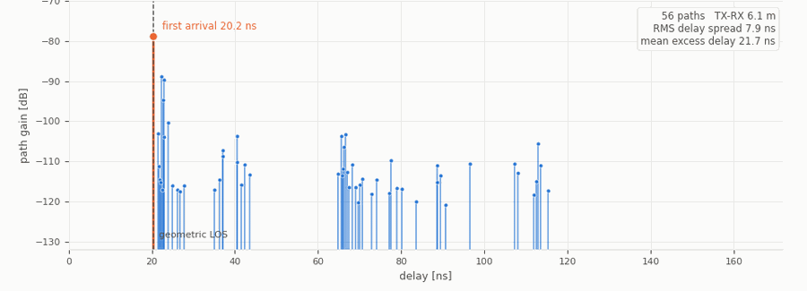

Paths with the same travel distance span ~20 dB of excess loss. What differs is what they hit—which surface, how many times, and whether the interaction is specular or diffuse.
Interactive note · map-aware multipath classification
MPC Detection to Bounce Count
A resolved multipath component can provide four observables: a delay (a path length), an arrival angle at the UE, a departure angle at the BS, and a path loss. When the map and the positions and headings of both the BS and UE are known, these measurements can be converted into global bearings and checked against map-consistent propagation paths. The goal is to identify the physical route behind each MPC detection and report its bounce count. Sections 1 and 2 below preserve the measurement and known-pose geometry scaffold that we will adapt for that test.
Context. The theory uses the same kind of per-path tuple that a SAGE estimator can produce, but every scene and number on this page is illustrative rather than a replay of measured SAGE output. The current
Gaussian_Splatting_Test benchmark consumes synthetic ray-tracer path observables with world-aligned, translation-only pose states. The virtual-anchor reading follows E. Leitinger et al., “A Belief Propagation Algorithm for Multipath-Based SLAM,” IEEE Trans. Wireless Commun. 18(12), 2019. Scale in the 2D drawings: 1 px ≙ 0.1 m.01Measurement
The channel estimator resolves a multipath component into geometric and radiometric observations. Read the delay and angles first, then use the power–delay profile and path-loss factors to understand which physical route produced them.
1.1The resolved path tuple
For one multipath component the channel estimator (SAGE, ESPRIT, …) returns a tuple (τ, φ, ψ, PL). Each element has its own geometric meaning:
delay τ → a length L = cτ
angle φ (AoA at the UE)
angle ψ (AoD at the BS)
path loss → a calibrated path-gain / loss observation
angle φ (AoA at the UE)
angle ψ (AoD at the BS)
path loss → a calibrated path-gain / loss observation
1.2The power–delay profile

1.3What changes path loss beyond distance
Four effects explain why paths with similar travel distance can arrive with very different power.
Polarization exposes the difference: on matched reflected paths, half of all matched pairs differ by more than 3 dB between polarizations.
Rough-surface and small-scale effects redistribute energy and can weaken the coherent component even when the large-scale geometry is unchanged.
Some clusters vanish for whole stretches of frames in the delay–frame waterfall while the geometry barely changes.
02Geometry view with known UE pose and array orientation
Scope of §2. These 2D constructions assume synchronized delay, globally oriented AoA/AoD, and correctly associated nested prefix paths (for example, a one-bounce path followed by the corresponding two-bounce path). In 3D, the delay ellipse becomes a prolate ellipsoid and bearings live on S².
2.1Single bounce: draw everything from (τ, φ, ψ)
the data (drives the drawing)
layers
drag the green UE dot — sliders re-sync to its specular measurement
Read it. d₁ + d₂ = L puts P on the orange ellipse; the mirror makes ‖P→VA‖ = d₂, so the same ray, extended to the full measured length L, ends exactly at VA. The dark wall segment is drawn purely from (τ, φ): perpendicular bisector of BS↔VA, through P. The dashed orange rings mark the two foci (the pins) of the ellipse. Delay + angle cannot tell the two readings apart — you choose the representation. This page’s illustrative σ slider perturbs incidence points. Separately, the earlier prototype derives VA-cluster dispersiveness δ from measurement-derived VA covariance, δ=√(order·tr Σ). Neither the illustrative σ nor prototype δ is the physical surface fraction γsc defined in §5.1 and separated from diffuse directionality in §5.4.
2.2Double bounce: two virtual anchors, two incidence points
the data — path 1 (single bounce)
the data — path 2 (double bounce)
not an input — and not fixed by path 2’s (τ, φ, ψ) alone: locating P₂ needs VA¹, bootstrapped here from path 1. Given it, the AoA pins P₂ and L₁ = L₂ − ‖UE→P₂‖ follows.
construction — step
drag the green UE dot · σ = 0 removes the illustrative smear
Legend. ■ BS · ● UE (draggable) · ◆ purple = virtual anchors: VA¹ bootstrapped live from path 1, VA² (hollow = ground-truth reference, filled = from the data) · orange = path 1, the single-bounce path whose full-length walk supplies VA¹ · thin purple curve = the one-parameter family of VA¹ candidates that path 2’s data alone allows — the bootstrapped VA¹ must land on it, and does exactly when both paths’ data are clean · ● teal = incidence points P₁, P₂ estimated from the data, with illustrative perturbation clouds on the true walls · dot size/opacity is a synthetic Gaussian footprint weight, not measured path loss · red ○ + dashed red segments = the single-bounce hypothesis drawn in full: its bounce point must absorb the whole measured length (the two red distances sum to L₂), forcing an implied wall beyond wall B that matches no wall in the map · green ellipse = the bounce-1 segment: leftover string L₂ − ‖UE→P₂‖ pinned at BS & P₂, passing through P₁ · dashed rings = the two foci (pins) of the same-colored ellipse: red at BS & UE, teal at VA¹ & UE, green at BS & P₂.
2.3Triple bounce: the recursion run in full
the data — path 1 (single bounce)
the data — path 2 (double bounce)
the data — path 3 (triple bounce)
not inputs — each peel subtracts one leg; the splits exist only once VA¹ and VA² do.
construction — step
drag the green UE dot · σ = 0 removes the illustrative smear
Legend. ■ BS · ● UE (draggable) · ◆ purple = the anchor ladder: VA¹ bootstrapped from path 1, VA² from path 2, VA³ (hollow = ground-truth reference, filled = the full-L₃ walk of the data) · orange = path 1 · gold = path 2 · red dashed = the two rejected hypotheses: the 1-bounce ellipse (string at BS & UE) with its split points P(φ) ≠ P(ψ), and the VA¹-anchored 2-bounce reading whose implied first-bounce wall fails to mirror BS onto VA¹ · teal ellipse = bounce 3, string L₃ at VA² & UE → P₃ · green ellipse = bounce 2, leftover string at VA¹ & P₃, its point picked not by data but by aiming from P₃ at VA² · blue ellipse = bounce 1, leftover string at BS & P₂, picked by the measured AoD → P₁ · dashed rings mark each ellipse’s foci (its pins) · ● teal dots = incidence points, with illustrative perturbation clouds on all three true walls in the last step · dot size/opacity is a synthetic Gaussian footprint weight, not measured path loss.
2.4Double bounce, corridor edition: two parallel walls
the data — path 1 (single bounce)
the data — path 2 (double bounce)
construction — step
drag the green UE dot · σ = 0 removes the illustrative smear
Legend. Same as the corner demos above — dashed rings mark each ellipse's foci · red = rejected 1-bounce hypothesis with its implied wall · note the AoD arrow at the BS is exactly anti-parallel to the AoA arrow at the UE, and stays so while you drag: that lock is the parallel-wall signature.
2.5Triple bounce, corridor edition: parity, and a hypothesis that angles cannot kill
the data — path 1 (single bounce)
the data — path 2 (double bounce)
the data — path 3 (triple bounce)
construction — step
drag the green UE dot · σ = 0 removes the illustrative smear
Legend. Same conventions as the corner triple — orange = path 1, gold = path 2, teal / green / blue ellipses = bounces 3 / 2 / 1 with dashed rings at their foci, ◆ purple = the anchor ladder VA¹, VA², VA³ · the ghost dashed vertical = the image of wall L in mirror R: the 1-bounce hypothesis point sits exactly on it, at the mirror image of the true P₂, and the red ✗ where the BS ray pierces wall R (the true P₁) is the occlusion that rejects it · note the parity locks in the statline: odd paths mirror (ψ = −φ), even paths anti-parallel (ψ = φ ± 180°).
2.6Two-bounce ambiguity: motion alone need not recover the two walls
A composite virtual anchor identifies an ordered reflection transform, not necessarily its individual reflecting planes. For two nonparallel walls meeting at c, rotate both walls by the same angle about c. Their relative angle—and therefore both ordered two-reflection transforms—stay fixed. Every known UE pose keeps exactly the same delay, AoA, and AoD, while the two incidence points and individual walls move.
Correction to the earlier demo. Two pose-specific candidate curves do not generically provide a unique transverse crossing in this construction; they share the same ambiguity orbit. Finite wall support, visibility, a separately observed one-bounce prefix, or a calibrated incidence-dependent path-gain model can add the missing information.
one unobservable mode
layers
Move Δα: the physical explanation changes, but geometric observables remain fixed to numerical precision.
Read it. FB′FA′ = FBFA and FA′FB′ = FAFB under a common rotation about the wall intersection. The purple composite VA, the reverse-order image that fixes AoD, and both UE measurements therefore stay put. Teal incidence points slide along the rotated walls. The orange loss bar is deliberately separate: angle- or material-dependent radiometry can vary along this otherwise invisible geometric mode and may help identify it.